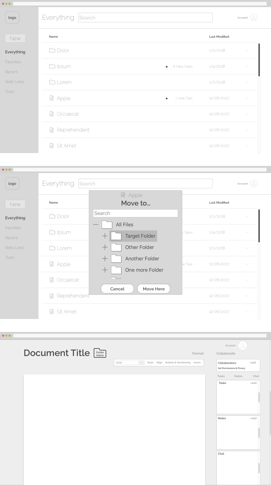
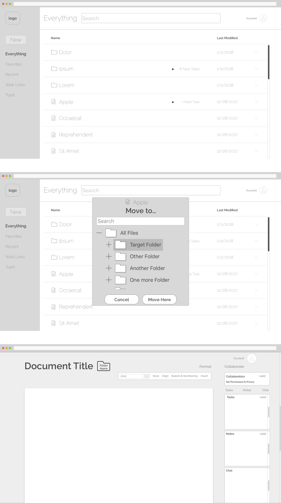
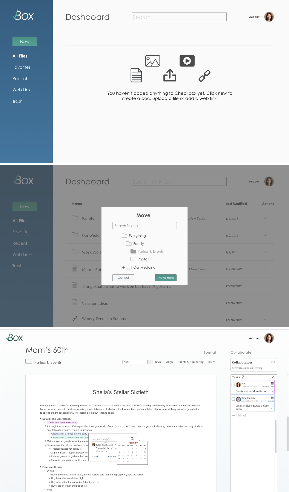
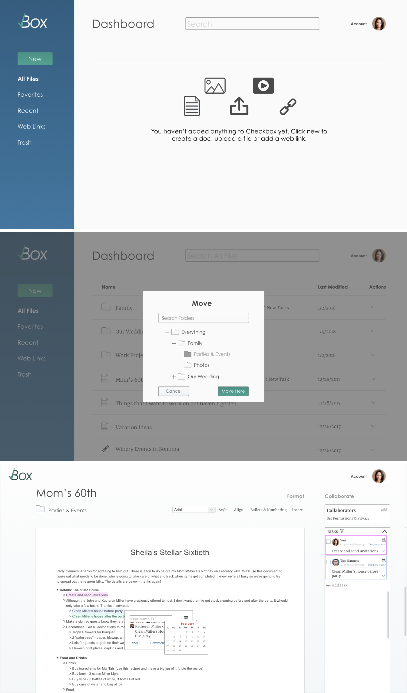

Our goal, as defined by the client, was very clear and very broad at the same time: become competitive in the cloud storage and organization market by finding the right combination of features to meet the needs of a particular audience.
CheckBox provides an easy to use cloud storage and collaboration space where users can store documents, media and web links as separate files with easy navigation, and use task management within documents, to keep teams productive and working towards completing their projects.
RESEARCH
COMPETITIVE ANALYSIS
I began by researching several competitors in the cloud storage and organization space to get a sense of the landscape. I then went in depth researching Box, GoogleDrive and Evernote; analyzing the strengths, weaknesses, opportunities and threats (SWOT Analysis) of each. From my research of competitors, I identified ways my product could differentiate itself.
- Task creation and assignment feature
- Web links saved as their own files
- Payment options based on both features and storage
- Privacy and security options for files
- Track completion of tasks within a document
- Pared down design with fewer distractions
USER SURVEYS
I used the opportunities for differentiation uncovered during the competitive analysis to create a survey that would help gain insight into the current user experience and identify identify where to focus my product in order to meet user needs.
- Task creation and assignment in a document
- Track completion of document tasks
- Easy to understand security options for files
- More storage for less money
Survey Takeaways
USER PERSONAS
Users expressed the desire for task management within assignment and security options. I conducted user interviews to gain a deeper understanding of user needs and kept these interviewees in mind as I designed, to ensure I was meeting user needs with my product; they really helped keep me focused.
USER STORIES
Now that I figured out my users’ needs, motivation and potientional pain points, I could start designing what solutions my product could offer. I created user stories to prioritize which features would be important must-haves and which features might be added on later, perhaps as part of a paid subscription. Here are the highest priority user stories whose processes I needed to think through:
- I want to add content to my dashboard
- I want to organize conent within my dashboard
- I want to assign tasks within a file
USER FLOWS
User stories helped me identified WHAT users want to do in a file, user flows helped me think about HOW users will complete those actions.
Add Content to dashboard
Organize a file
Add a Task within a Document
BRANDING
BRAINSTORM & SKETCH
As I moved through the process, the direction for my product became more clear and I began to build a brand that represented the product accurately. I began by mind mapping and sketching names and logos that communicated one of the most important and differentiating features - simple task management within a document, meant to make collaboration easier and more productive.
I sketched some potential logos, chose one that was simple and combined a check with the word box.
I then went digital and built several variations of the logo.
STYLE GUIDE
I wanted the product to be simple and clean and searched for images, colors, textures, and words to capture that feeling. This focusing activity helped me build a style guide that I used during high fidelity mockups and which future designers and developers can use when iterating on CheckBox.
DESIGN
Wireframes
After considering user flows, I build wireframes so I could conduct my first round of user testing and get feedback on the user experience. this feedback helped me focus my design as I began high fidelity mockups. I focused on developing the task function because users were most interested in this feature.
 

PROTOTYPE & USER TESTS
With a solutions focus, and a direction for branding, I built a high fidelity mockup and did user testing. Refining my visual design though several iterations to get the refined, high quality feel that I desired for this product.
- The connection between the tasks in a document and the task list sidebar are not clear.
- While it is nice to have the option to see tasks assigned to all users, I want an option to filter tasks to only me.
- When a tasks is hovered over in the document or in the sidebar it will ‘light up’ in both locations making the connection clear.
- Create a filter feature that allows users to filter and sort tasks in the sidebar making it more user friendly and useful.
Pain Point 1: The Task Bar
Solution

- I don’t know where I can find a menu of options for each file. This required tester to point to menu arrow.
- Simplify the visual design of dashboard and label the menu arrow ‘actions’.
Pain Point 2: The Dashboard
Solution
- Several screens feel very busy, and I’m not sure where to focus.
- Refined visual design and thoughtful use of darkened background with modals.
Pain Point 3: Design is too busy
Solution

HIGH FIDELITY MOCKUPS
With a solutions focus, and a direction for branding, I built a high fidelity mockup and did user testing. Refining my visual design though several iterations to get the refined, high quality feel that I desired for this product.
 
